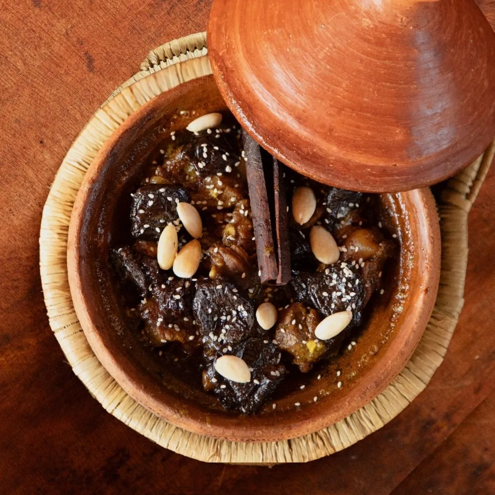

What Is a Tajine? A Guide to Morocco's Most Iconic Dish
A tajine (also spelled tagine) is both Morocco's conical clay pot and the slow-cooked dish made inside it — tender meat or vegetables, aromatic spices and time.
A tajine (also commonly spelled tagine in English) is both a traditional Moroccan clay cooking pot and the slow-cooked dish prepared inside it. With its distinctive conical lid, the tajine gently circulates steam during cooking, allowing meat, fish or vegetables to become exceptionally tender while preserving their natural flavours. More than a recipe, it is one of the oldest and most cherished symbols of Moroccan family cooking and hospitality.
What Is a Tajine?
Few dishes are as closely associated with Morocco as the tajine.
The word tajine refers to two things at once: the earthenware cooking vessel and the slow-cooked meal prepared inside it. For centuries, families across Morocco have used this simple clay pot to transform everyday ingredients into rich, deeply flavoured meals that are meant to be shared.
Although every region has its own recipes, the philosophy remains the same: fresh ingredients, aromatic spices, patience and slow cooking.
Unlike many stews, a traditional tajine isn't about heavy sauces or complicated techniques. It relies on time. As the ingredients cook gently together, their flavours gradually blend into a dish that is both comforting and remarkably balanced.
The Traditional Tajine Pot
The tajine pot is instantly recognisable by its wide, shallow base and tall conical lid.
This shape isn't simply decorative.
It was designed centuries ago to cook efficiently using very little water. As the food slowly heats, steam rises into the cone, cools against the clay and gently falls back onto the ingredients. This natural cycle keeps the food moist while concentrating its flavours without the need for large amounts of liquid.
Traditionally, tajines are made from natural clay. Some are left unglazed for everyday family cooking, while others are beautifully decorated and used for serving at the table.
In Morocco, the tajine is more than cookware. It is part of the meal itself, arriving directly from the fire to the centre of the table where everyone shares from the same dish.
How Is a Traditional Moroccan Tajine Prepared?
Preparing a tajine is as much about patience as it is about ingredients.
Everything begins with a thin layer of olive oil in the base of the clay pot. Sliced onions are often arranged first, creating a fragrant foundation for the rest of the dish.
Meat, poultry or fish is then placed in the centre, followed by vegetables, preserved lemons, olives, herbs and carefully measured spices. Rather than being mixed together, the ingredients are traditionally layered with care so each one cooks gently in place.
Only a small amount of water is added — sometimes none at all, depending on the recipe and the moisture naturally released by the ingredients.
Traditionally, the tajine is cooked over glowing charcoal using a small brazier known in Morocco as a majmar. Unlike a strong open flame, charcoal provides gentle, even heat that allows the dish to simmer slowly for several hours. Today, many Moroccan families also prepare tajines on gas hobs or in modern kitchens, often using a diffuser beneath the pot to protect the clay from direct heat.
As the tajine cooks, steam rises into the conical lid before cooling and dripping back over the ingredients. This continuous circulation naturally bastes the food throughout the cooking process, creating tender meat, perfectly cooked vegetables and concentrated flavours.
One detail often surprises first-time cooks: a traditional tajine is rarely stirred. Once the ingredients have been carefully arranged, they are generally left untouched until the dish is ready to serve.
Why Does the Conical Lid Matter?
The distinctive conical lid is the secret behind the tajine's unique cooking method.
Instead of allowing steam to escape, it continuously returns moisture to the food. This creates a natural self-basting effect that keeps the ingredients succulent while reducing the need for additional liquid.
The result is a dish with intensely concentrated flavours, tender textures and a sauce created almost entirely by the ingredients themselves.
It is a beautifully simple design that has changed very little over the centuries.
Morocco's Most Famous Tajines
Every region of Morocco has its own specialities, but a few recipes have become classics throughout the country.
Chicken with Preserved Lemons and Olives is perhaps the best-known Moroccan tajine, combining citrus, saffron, ginger and olives into a dish that is both bright and comforting.
Lamb with Prunes and Almonds offers a balance of savoury and sweet, enriched with cinnamon, honey and toasted almonds.
Kefta Tajine features seasoned beef or lamb meatballs gently cooked in a rich tomato sauce before eggs are cracked directly into the bubbling dish.
Along the coast, Fish Tajines celebrate fresh seafood with tomatoes, peppers, herbs and chermoula, Morocco's famous herb and spice marinade.
In the Atlas Mountains, you'll also find simple but delicious vegetable tajines prepared with seasonal produce, olive oil and local herbs.
Every family has its own recipes, and many of Morocco's most treasured tajines have been passed down through generations rather than written in cookbooks.
Tajine or Tagine?
Both spellings are correct.
Tajine is the French spelling, widely used in Morocco and across Europe. Tagine is the English spelling commonly found in international cookbooks and travel guides.
Whether you write tajine or tagine, both refer to the same iconic Moroccan cooking pot and the traditional dish prepared inside it.
Discover Tajine at Dar Mansour
At Dar Mansour, our tajines are prepared with the same philosophy found in Moroccan family homes: slow cooking, carefully layered ingredients and recipes passed down through generations.
Rather than rushing the process, we allow time to do its work. Traditional spice blends, preserved lemons, olives and fresh herbs gradually develop their full flavour, creating dishes that reflect the generosity and hospitality at the heart of Moroccan cuisine.
For us, a tajine is more than a recipe. It is an invitation to slow down, share a meal and experience one of Morocco's most enduring culinary traditions.
Frequently asked questions
Is a tajine the pot or the dish?
Both. The word refers to the traditional clay cooking vessel as well as the slow-cooked Moroccan dish prepared inside it.
Why is a tajine cooked so slowly?
Slow cooking allows flavours to develop naturally while keeping the meat and vegetables exceptionally tender. The conical lid also helps retain moisture throughout the cooking process.
Is a traditional tajine spicy?
Not usually. Moroccan cuisine is aromatic rather than hot. Spices such as cumin, ginger, turmeric, saffron and cinnamon add depth and fragrance rather than intense heat.
Can you cook a tajine without a clay pot?
Yes. Many recipes can be prepared in a Dutch oven or casserole dish. However, the traditional clay tajine creates a unique style of gentle cooking that many Moroccan families still prefer.
What is the difference between a tajine and couscous?
A tajine is a slow-cooked dish prepared in a clay pot. Couscous is steamed semolina traditionally served with vegetables, meat or broth. They are two of Morocco's most iconic dishes but are prepared in completely different ways.
Taste the story around our table
The best chapters are written over a slow Moroccan dinner. Reserve your evening at Dar Mansour.